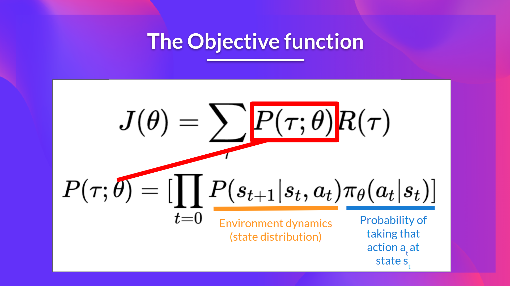

Policy Gradient#
Note
Since the beginning of the course, we have only studied value-based methods, where we estimate a value function as an intermediate step towards finding an optimal policy. Finding an optimal value function leads to having an optimal policy:
With policy-based methods, we want to optimize the policy directly without having an intermediate step of learning a value function.
The policy-gradient methods#
In policy-based methods, we directly learn to approximate \(\pi^{\ast}\).
The idea is to parameterize the policy. For instance, using a neural network \(\pi_{\theta}\), this policy will output a probability distribution over actions (stochastic policy).
Our objective then is to maximize the performance of the parameterized policy using gradient ascent. To do that, we define an objective function \(J(\theta)\), that is, the expected cumulative reward, and we want to find the value \(\theta\) that maximizes this objective function.

The advantages and disadvantages of policy-gradient methods#
There are multiple advantages over value-based methods. Let’s see some of them:
Policy-gradient methods can learn a stochastic policy while value functions can’t.
Policy-gradient methods are more effective in high-dimensional action spaces and continuous actions spaces. The problem with Deep Q-learning is that their predictions assign a score for each possible action, at each time step, given the current state. Instead, with policy-gradient methods, we output a probability distribution over actions.
Policy-gradient methods have better convergence properties. In value-based methods, we use an aggressive operator to change the value function: we take the maximum over Q-estimates. Consequently, the action probabilities may change dramatically for an arbitrarily small change in the estimated action values if that change results in a different action having the maximal value.
Naturally, policy-gradient methods also have some disadvantages:
Frequently, policy-gradient methods converges to a local maximum instead of a global optimum.
Policy-gradient goes slower, step by step: it can take longer to train.
Policy-gradient can have high variance.
The Policy Gradient Theorem#
The objective function outputs the expected cumulative reward:
It can be formulated as:

Policy-gradient is an optimization problem: we want to find the values of \(\theta\) that maximize our objective function \(J(\theta)\), so we need to use gradient-ascent:
However, there are two problems with computing the derivative of \(J(\theta)\):
We can’t calculate the true gradient of the objective function since it requires calculating the probability of each possible trajectory, which is computationally super expensive. So we want to calculate a gradient estimation with a sample-based estimate.
To differentiate this objective function, we need to differentiate the state distribution, this is attached to the environment. The problem is that we can’t differentiate it because we might not know about it.
Fortunately we’re going to use a solution called the Policy Gradient Theorem that will help us to reformulate the objective function into a differentiable function that does not involve the differentiation of the state distribution.
Proof. We have:
The Reinforce algorithm (Monte Carlo Reinforce)#
In a loop:
Use the policy \(\pi_{\theta}\) to collect some episodes
Use these episodes to estimate the gradient.
We can interpret this update as follows: \(-\nabla_{\theta}\log\pi_{\theta}(a_{t}|s_{t})\) is the direction of steepest increase of the (log) probability of selecting action at from state \(s_{t}\). This tells us:
If the return \(R(\tau)\) is high, it will push up the probabilities of the (state, action) combinations.
Otherwise, it will push down the probabilities of the (state, action) combinations.
Don’t Let the Past Distract You#
Examine our most recent expression for the policy gradient:
Taking a step with this gradient pushes up the log-probabilities of each action in proportion to \(R(\tau)\), the sum of all rewards ever obtained. But this doesn’t make much sense.
Agents should really only reinforce actions on the basis of their consequences. Rewards obtained before taking an action have no bearing on how good that action was: only rewards that come after.
It turns out that this intuition shows up in the math, and we can show that the policy gradient can also be expressed by
In this form, actions are only reinforced based on rewards obtained after they are taken. We’ll call this form the “reward-to-go policy gradient”, it is a lower-variance estimate than the simplest policy gradient.
The proof of this claim depends on the EGLP lemma: Suppose that \(P_{\theta}\) is a parameterized probability distribution over a random variable, \(x\). Then:
Proof. Recall that all probability distributions are normalized:
Take the gradient of both sides of the normalization condition:
Use the log derivative trick to get:
Baselines in Policy Gradients#
An immediate consequence of the EGLP lemma is that for any function \(b\) which only depends on state,
This allows us to add or subtract any number of terms like this from our expression for the policy gradient, without changing it in expectation:
Any function \(b\) used in this way is called a baseline.
The most common choice of baseline is the on-policy value function \(V^{\pi}(s_t)\). Recall that this is the average return an agent gets if it starts in state \(s_t\) and then acts according to policy \(\pi\) for the rest of its life. Empirically, the choice \(b(s_t) = V^{\pi}(s_t)\) has the desirable effect of reducing variance in the sample estimate for the policy gradient. This results in faster and more stable policy learning.
Note
In practice, \(V^{\pi}(s_t)\) cannot be computed exactly, so it has to be approximated. This is usually done with a neural network, \(V_{\phi}(s_t)\), which is updated concurrently with the policy (so that the value network always approximates the value function of the most recent policy).
The simplest method for learning \(V_{\phi}\), used in most implementations of policy optimization algorithms, is to minimize a mean-squared-error objective:
where \(\pi_k\) is the policy at epoch \(k\). This is done with one or more steps of gradient descent, starting from the previous value parameters \(\phi_{k-1}\).
Other Forms of the Policy Gradient#
What we have seen so far is that the policy gradient has the general form
where \(\Phi_t\) could be any of
or
or
All of these choices lead to the same expected value for the policy gradient, despite having different variances. It turns out that there are two more valid choices of weights \(\Phi_t\) which are important to know.
On-Policy Action-Value Function. The choice
\[\Phi_t = Q^{\pi_{\theta}}(s_t, a_t)\]is also valid.
The Advantage Function defined by \(A^{\pi}(s_t,a_t) = Q^{\pi}(s_t,a_t) - V^{\pi}(s_t)\), describes how much better or worse it is than other actions on average (relative to the current policy). This choice,
\[\Phi_t = A^{\pi_{\theta}}(s_t, a_t)\]is also valid.
Pytorch example#
Policy network#
import torch
import torch.nn as nn
import torch.nn.functional as F
import torch.optim as optim
class Policy(nn.Module):
"""MLP"""
def __init__(self):
super(Policy, self).__init__()
self.affine1 = nn.Linear(4, 128)
self.dropout = nn.Dropout(p=0.6)
self.affine2 = nn.Linear(128, 2)
self.saved_log_probs = []
self.rewards = []
def forward(self, x):
x = self.affine1(x)
x = self.dropout(x)
x = F.relu(x)
action_scores = self.affine2(x)
return F.softmax(action_scores, dim=1)
policy = Policy()
optimizer = optim.Adam(policy.parameters(), lr=1e-2)
*self.saved_log_probs saves \(\left[\pi_{\theta}(a_{0}|s_{0}), \pi_{\theta}(a_{1}|s_{1}),\dots,\pi_{\theta}(a_{T}|s_{T})\right]\)
*self.rewards saves \(\left[r_{0},r_{1},\dots,r_{T}\right]\)
Env#
import gym
env = gym.make('CartPole-v1')
env.reset(seed=1)
(array([ 0.00118216, 0.04504637, -0.03558404, 0.04486495], dtype=float32),
{})
One episode#
import numpy as np
from torch.distributions import Categorical
def select_action(state):
state = torch.from_numpy(state).float().unsqueeze(0)
probs = policy(state)
m = Categorical(probs)
action = m.sample()
policy.saved_log_probs.append(m.log_prob(action))
return action.item()
gamma = 0.99
def finish_episode():
R = 0
eps = np.finfo(np.float32).eps.item()
policy_loss = []
returns = deque()
for r in policy.rewards[::-1]:
R = r + gamma * R
returns.appendleft(R)
returns = torch.tensor(returns)
returns = (returns - returns.mean()) / (returns.std() + eps)
for log_prob, R in zip(policy.saved_log_probs, returns):
policy_loss.append(-log_prob * R)
optimizer.zero_grad()
policy_loss = torch.cat(policy_loss).sum()
policy_loss.backward()
optimizer.step()
del policy.rewards[:]
del policy.saved_log_probs[:]
returns = \(\left[R_{0}, R_{1}, \dots, R_{T}\right]\) where \(R_{t} = r_{t} + \gamma r_{t+1} + \gamma^{2}r_{t+2} + \dots\)
policy_loss = \(\sum_{i=0}^{T}-\log\pi_{\theta}(a_{t}|s_{t})R_{t}\)
Main loop#
from itertools import count
from collections import deque
def main():
running_reward = 10
for i_episode in count(1):
state, _ = env.reset()
ep_reward = 0
for t in range(1, 10000): # Don't infinite loop while learning
action = select_action(state)
state, reward, done, _, _ = env.step(action)
policy.rewards.append(reward)
ep_reward += reward
if done:
break
running_reward = 0.05 * ep_reward + (1 - 0.05) * running_reward
finish_episode()
if i_episode % 10 == 0:
print('Episode {}\tLast reward: {:.2f}\tAverage reward: {:.2f}'.format(
i_episode, ep_reward, running_reward))
if running_reward > env.spec.reward_threshold:
print("Solved! Running reward is now {} and "
"the last episode runs to {} time steps!".format(running_reward, t))
break
main()
/Users/xiayunhui/anaconda3/lib/python3.11/site-packages/gym/utils/passive_env_checker.py:233: DeprecationWarning: `np.bool8` is a deprecated alias for `np.bool_`. (Deprecated NumPy 1.24)
if not isinstance(terminated, (bool, np.bool8)):
Episode 10 Last reward: 45.00 Average reward: 15.06
Episode 20 Last reward: 35.00 Average reward: 27.11
Episode 30 Last reward: 98.00 Average reward: 40.73
Episode 40 Last reward: 30.00 Average reward: 42.89
Episode 50 Last reward: 39.00 Average reward: 50.75
Episode 60 Last reward: 92.00 Average reward: 66.16
Episode 70 Last reward: 331.00 Average reward: 107.18
Episode 80 Last reward: 103.00 Average reward: 154.36
Episode 90 Last reward: 48.00 Average reward: 113.81
Episode 100 Last reward: 96.00 Average reward: 99.90
Episode 110 Last reward: 172.00 Average reward: 155.10
Episode 120 Last reward: 239.00 Average reward: 206.40
Episode 130 Last reward: 196.00 Average reward: 224.19
Episode 140 Last reward: 194.00 Average reward: 251.26
Episode 150 Last reward: 372.00 Average reward: 239.45
Episode 160 Last reward: 305.00 Average reward: 362.52
Solved! Running reward is now 649.4581415449471 and the last episode runs to 5964 time steps!